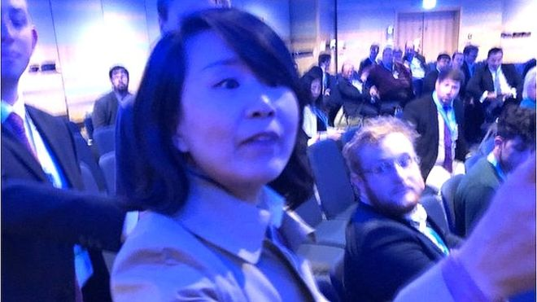
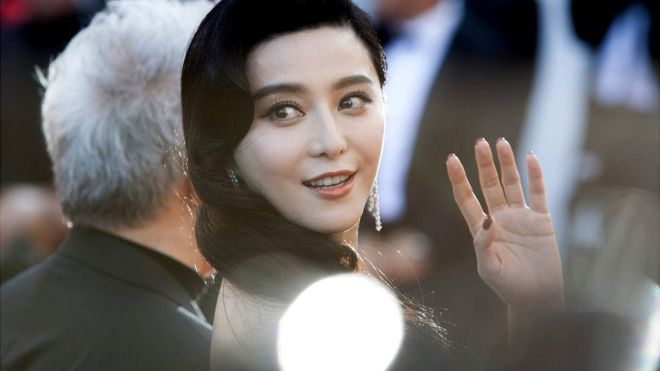
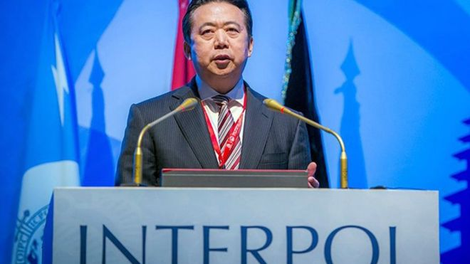

本板块推文本板块推文精选国外主流媒体报道，由编者翻译转载，并提供报道来源网址 (由于某些原因，网站可能无法打开)，推文内容不代表编者主张。本板块一周一推，力 求客观，致力于为大众打造观察中国的新视野。精选国外主流媒体报道，由编者翻译转 载，并提供报道来源网址(由于某些原因，网站可能无法打开)，推文内容不代表编者主 张。本板块一周一推，力求客观，致力于为大众打造观察中国的新视野。
|
|  |
央视女记者英国论坛闹场遭逮捕 中国使馆要求英主办者道歉
|
|
中国和瑞典因游客问题而掀起的外交风波刚平息不久，北京又因国民在海外行为引起争议，而同英国掀开骂战。
一名中国中央电视台女记者星期天（9月30日）因不满英国保守党论坛主讲者对香港问题的立场而大闹会场，还涉嫌动手打人，遭英国警方逮捕后获释。中国驻英使馆发言人前晚深夜发表了措辞强烈的声明说，记者表达观点却遭“百般阻挠，甚至人身侵犯”，要求组织者向记者道歉。
受访中国学者认为，西方国家对中国充满偏见，刻意将微观的民事问题放大并上升到外交层面，令人遗憾。但学者也提出，中国外交系统在处理应急事件时，手法还可以更加成熟谨慎。
英保守党办研讨会 讨论香港自由和法治
英国保守党星期天在伯明翰召开年会，该党人权委员会和非政府组织“香港监察”（Hong Kong Watch）联办一场主题为“香港自由、法治和自治的侵蚀”的研讨会，出席者包括香港民主党创党主席李柱铭、香港“占中”运动发起人之一戴耀廷，以及香港众志常委罗冠聪等。
根据“香港监察”新闻稿，保守党人权委员会副主席、“香港监察”主席罗杰斯（Benedict Rogers）在论坛尾声时说，他虽然批评中国政府以及它对待人民的方式，但他始终希望中国和中国人民能成功。
此时，一名中国记者突然站起来用英文怒斥：“你撒谎！你反华，你想中国分裂！你连中国人都不是，其他人都是汉奸！”该记者后来被证实为央视欧洲中心站记者孔琳琳。
“香港监察”称，主办方要求孔琳琳离场，但她继续大喊大叫。一名工作人员在推特上称，他在劝阻孔琳琳时，被对方“掌掴”两次。
网上流传的现场录像显示，孔琳琳情绪激动地大骂“香港傀儡”（Hong Kong puppet）；工作人员提醒她，她的行为干扰了会议，要求她离开。过程中，工作人员碰触到孔琳琳的手臂，她马上大喊“放开我”，并大力拍打对方的手。
双方僵持了几分钟，孔琳琳继续高喊“你没有权力（赶我走）”“英国没有民主”等，最终在保安人员的护送下离开。她之后被警方逮捕，据报道，她已获释，但调查还在进行中。
中国驻英国使馆前晚发表声明称，孔琳琳是在“提问表达观点”，却遭到“百般阻挠”，甚至“人身侵犯”，这在一贯标榜言论自由的英国，是完全不能接受的，要求会议组织者向中国记者道歉。
声明也说，香港事务纯属中国内政，保守党人权委员会为反华分裂势力张目，中方表示严重关切和强烈不满。声明表示，中方坚决反对任何人、任何组织，以任何方式干涉香港事务，任何鼓吹“香港独立”的图谋和行为都是徒劳的。
央视发言人则说，孔琳琳的行为是“正常履职”，并指会议组织方“举止失当”，要求英方切实采取措施保障中方记者权益，“确保不再发生此类荒唐事件”。
中国网民大多“点赞” 保守党人质疑越来越猖獗
中国网民大多对孔琳琳的行为“点赞”，认为她维护了国家统一和尊严名誉。但也有人指，中国人在国外“战狼式”维权、一不高兴就大吵大闹，不讲规矩法治，影响了全体中国人民和国家形象。
英国保守党的罗杰斯也批评：“作为中国官媒代表，该女子利用记者身份对正当行使言论自由权的人士进行威吓，这是非常令人关注的事。”“这是否代表中国越来越猖獗的欺凌行为，已经向海外延伸？”
中国外交学院教授苏浩接受《联合早报》访问时说，孔琳琳的提问方式，以及是否存在被主办方“噤声”等情况尚不清楚，但可以肯定的是，保守党人员对香港事务进行干涉，带有很强的挑衅意味，引起在场中国记者的反感并抗议不奇怪。
他说：“本来是微观的问题，却被一些人放大、炒作为中国人的素质问题，对中国人民进行抹黑，令人遗憾。具体的问题应该具体来处理，才比较合适。”
不过苏浩也认为，北京应该从各起外交事件中总结经验，改善应急处理程序。
他说：“不以具体事件来评论，我认为外交人员在处理突发事件时，还是要先弄清楚事实真相和来龙去脉后，谨慎、客观地做出表态。这样才会凸显我们是讲道理的，不是在盲目地维护自己的国民。 |
|  |
范冰冰缴8.8亿免牢狱 震慑中国富豪的税与罚 |
10月3日 BBC中文网
https://www.bbc.com/zhongwen/simp/chinese-news-45730191
|
范冰冰的微博在沉寂了123天后，再次更新，发布一篇《致歉信》，承认在影片《大轰炸》和其他一些合同中出现利用“拆分合同”等逃税问题。
在这条微博发出的几个小时前，中国官方通讯社援引税务部门称，对范冰冰及其担任法人的企业追缴2.55亿元，滞纳金0.33亿元，以及各种罚款近6亿元。
“靴子”终于落地，这意味着范冰冰连缴带罚共需上交近9亿元。中国税务部门称，如果她能如期缴纳，将不予追究刑事责任。
不仅是范冰冰，整个影视行业也将面临查税的寒冬。中国国家税务局称，要规范影视行业税收秩序，2018年12月31日前自查自纠并到主管税务机关补缴税款的，将免予行政处罚，不予罚款，否则将依法依规严肃问责或追究法律责任。
范冰冰逃税2.55亿元不用负刑责
近9亿元的高额罚单是如何形成的？西南财经大学财税学院教授李建军向BBC中文解释，这笔钱由追缴税款、滞纳金和罚款三部分组成。
- 追缴税款达2.55亿元，指的是范冰冰及其企业应缴而未缴的税款；
- 滞纳金0.33亿元，可以“简单理解为所欠税款的利息”，按天计算；
- 罚款近6亿元，则是对范冰冰不同偷逃税行为进行处罚的钱，比如对“阴阳合同”隐瞒真实收入处以4倍罚款，达2.4亿元；对利用工作室账户隐匿个人报酬处以3倍罚款，达到2.39亿元。
如果范冰冰如期缴纳罚款和补缴税款，将被免除刑事责任。今年以前，范冰冰已经连续五年蝉联福布斯“中国名人榜”收入冠军，去年收入近3亿元人民币。因此补缴起近9亿元，似乎并不困难。
因此，不少网友质疑称，为何偷逃税2.55亿元的范冰冰不必负刑事责任，而当年偷逃税1400万的刘晓庆却入狱一年多。
“刑法的相关罪名和构成条件发生了重大变化，与涉案金额没有关系。”北京紫华律师事务所律师钱列阳曾担任刘晓庆案的刑辩律师，他向BBC中文解释称，刘晓庆案时用的还是1997年的刑法，叫偷税罪，2009年刑法修正案改成逃税罪了。
钱列阳称，从“偷税罪”到“逃税罪”，修改后有行政处罚前置程序，即如果初次逃税，税务机关进行行政处罚（滞纳金、罚款等）后，就不追究刑事责任，也就不算犯罪；以前一旦发现逃税行为，公安部门就可以直接介入抓人。
李建军分析，在涉税案件中，首先判断性质，再判断情节。范冰冰案中她只是偷逃税款，补缴齐税款及高额罚金后，可以减轻危害程度，保证公共利益，因此可以不予追责；而如果存在伪造票据、甚至抗税行为，则性质严重得多，很有可能会被追刑事责任。
“在刑法上有销毁会计凭证罪来追究刑事责任。”钱列阳举例，范冰冰经纪人牟某广在税务机关调查时，因为指使公司员工隐匿、故意销毁涉案公司会计凭证、会计账簿，阻挠税务机关依法调查，最终牟某广等人已被公安机关依法采取强制措施。
地方政府是否与范冰冰“合谋”偷逃税？
范冰冰案牵出的不仅是影视行业人士，地方税务部门也难逃其咎。
新华社引用中国税务局及江苏省税务局称，因范冰冰案，原无锡市地方税务局、原无锡市地方税务局第六分局等主管税务机关的有关负责人和相关责任人员将被问责。
“一些地方政府，可能会因为扶持地方某个产业，而对企业纳税睁一只眼闭一只眼。”李建军解释，此前影视行业流行工作室包税制的潜规则，通过定期定额征收方式少缴稅，然而这种“包税制”是税务部门对财务核算困难的个体户实行的简易征收方式，将工作室算入此列，显然有疏漏。
无锡之外，另一个集聚影视公司的城市是位于新疆、靠近哈萨克斯坦的霍尔果斯。在霍尔果斯市注册的公司5年免征公司税的优惠待遇，并且在第二个5年公司税减半。
正因如此，霍尔果斯市注册的公司数量去年猛增到14472家，比前一年增长了4倍。不过这些注册的公司在当地并没有开展任何业务，其中90%的公司属于轻资产行业，其中不少都是影视公司，也包括范冰冰名下的公司。
钱列阳称，如果是地方政府出台的“土政策”使范冰冰可以避税，那么她确实没有责任，只需依照国家法律取消这些政策即可，但现在来看又不止是简单避税，问责相关税务官员，可能牵出渎职甚至受贿等案件。
新华社文章中援引中国国家税务总局，警告对出现严重偷逃税行为且未依法履职的地区税务机关负责人及相关人员，将根据不同情形依法依规严肃问责或追究法律责任。
政府向影视行业喊话
范冰冰事发后，整个影视行业也面临“严冬”——对在2018年12月31日前自查自纠并到主管税务机关补缴税款的影视企业及相关从业人员，免予行政处罚，不予罚款；对个别拒不纠正的依法严肃处理。
李建军认为这种方式比较合理，整个影视行业涉及企业、个人众多，挨个筛查不太可能，通过"限期补缴免罚款"，可以用最低成本，最大程度弥补公共利益损失。
“另一个层面，涉及税收公平性的问题。”李建军解释，范冰冰等明星偷逃税，那意味着依法纳税者相对多缴了税。中国个人所得税常被称为“工薪税”，多纳税的就是这部分人。税制改革的逻辑就是，严格执行税法，应缴尽缴，如此就可以在保证公共收入的前提下适当降低税率。
钱列阳表示，刘晓庆案使整个影视行业提高了纳税意识，并在合同中实施代扣代缴义务；范冰冰案则可以打击影视行业"阴阳合同"等偷逃税的潜规则，再次提升行业的纳税意识。
香港中文大学商学院国际贸易及中国企业课程主任李兆波表示，这种情况并不罕见，付一笔巨款而避免牢狱之灾，在香港的案件中也出现过。而系统性偷逃税不仅出现在娱乐行业，在中国其他各个行业都存在，比如电子支付在中国已经非常普遍但在一些行业依然拒绝电子支付和银行转账，明显是想偷逃税。 |
更多资讯 |
|
BBC中文网
大闹英国保守党年会 中国央视女记者打人被捕
（在英国保守党年会期间，一名中国中央电视台女记者在一场有关香港问题的研讨会上与在场人士发生言语冲突，并动手打人，被警方逮捕。事后，中国驻英大使馆和中央电视台都发表声明抗议。）
《英雄烈士保护法》后首个烈士纪念日 中共高调缅怀英烈传承红色基因
（中共中央政法委下属的微信公号“长安剑”昨天发表文章称，英烈保护法的出台，再次传递了明确的信号：英烈保护并不只是烈士亲属的家事，而应是依法处理的国事，更应是人人关心的天下事。英烈不容得演绎、戏说，亮出红牌保护的是民族的历史精神。）
路透社
Chinese bishops to attend Vatican synod for first time
中国主教第一次参加梵蒂冈会议
（梵蒂冈周一表示，来自中国的天主教主教将首次参加本周开始的梵蒂冈主要会议，这是罗马教廷与北京达成一项具有里程碑意义的协议后解冻的第一个具体迹象。） |
| 10月2日 |
路透社
China condemns U.S. for South China Sea freedom of navigation operation
中国谴责美国对南海的航行自由行动
（中国周二表示愤怒，此前美国海军驱逐舰在有争议的南中国海声称在中国声称的岛屿附近航行，称它坚决反对一项称其威胁其主权的行动。）
China mounts publicity campaign to counter criticism on Xinjiang
中国开展宣传活动，反对对新疆的批评
（中国正在越来越复杂地批评其在新疆穆斯林地区的政策受到批评，在海外寻求外国媒体和在国外运行舆论，因为它试图发出更积极的信息。） |
| 10月3日 |
BBC中文网
范冰冰缴8.8亿免牢狱 震慑中国富豪的税与罚
联合早报
央视女记者英国论坛闹场遭逮捕 中国使馆要求英主办者道歉
路透社
Hong Kong bishop fears Chinese Catholic 'suppression' to continue despite Vatican pact
香港主教担心，尽管有梵蒂冈协议，中国天主教徒的“镇压”仍在继续 |
| 10月4日 |
联合早报
以不方便为由 中方要求安倍访华计划改期
（有消息指，日本首相安倍晋三原定在《中日和平友好条约》生效40周年当天、即本月23日访华的计划被打乱，原因是中国政府以不方便为由提出改期。不过，其中原因尚不清楚。）
路透社
Pence accuses China of 'malign' campaign to undermine Trump
彭斯指责中国“恶毒”的运动破坏了特朗普
（美国副总统迈克彭斯周四强调华盛顿对北京的压力，指责中国在下个月的国会选举和南中国海的鲁莽军事行动之前，“恶毒”的努力破坏唐纳德特朗普总统。） |
| 10月5日 |
BBC中文网

国际刑警组织主席孟宏伟在中国失踪 法国开启调查
FT亚洲总编续签证被拒 再引香港“中国大陆化”忧虑
（英国《金融时报》向BBC中文确认，香港政府早前拒绝香港外国记者会（FCC）署任主席马凯（Victor Mallet）续期工作签证的申请。FCC早前邀请香港民族党“召集人”陈浩天发表演讲，引起中国和香港政府不满。） |
| 10月6日 |
联合早报
被指影响美中期选举和总统选举 中国反驳彭斯对华种种指责
（中国外交部发言人华春莹周五清晨以答记者问方式，迅速对干预美国内政的说法表示坚决反对。她指彭斯的讲话“纯属捕风捉影、混淆是非、无中生有”。）
美智库报告：解放军现代化水平提升 中国大陆对台采取军事行动能力提升
（美国智库传统基金会昨天公布《2019年美国军力指数报告》，指出中国大陆统一台湾的努力不仅限于公开的军事手段，还包括法律战、舆论战与心理战的“三战”战略，以减损台湾抵抗的意志与美国支持台湾的意愿。） |